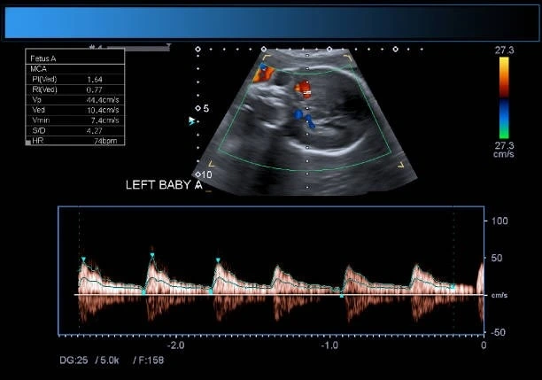

For most expectant parents, the purpose of a pregnancy scan is the image — the first glimpse of a face, a tiny hand, or a heartbeat flickering on screen. But for trained obstetric sonologists at a dedicated fetal scan centre Madurai, the scan is never just a photograph. It is a systematic clinical assessment of every organ, every structure, and — critically — every chamber, valve, and vessel of your baby's heart. Congenital heart disease is the single most common category of birth defect, affecting approximately 8 in every 1,000 live births globally and significantly more in India due to specific population-level risk factors. Yet the majority of congenital heart conditions are entirely detectable through advanced fetal imaging before birth — if the right prenatal heart check is performed at the right time. This guide explains what congenital heart screening involves, why fetal echo Madurai goes far beyond the routine scan, what a baby heart monitor ultrasound actually assesses, the clinical discipline of fetal cardiology and how it is applied at our centre, the particular fetal heart scan importance for Indian moms given population-specific risk factors, and why Meera 4D Scans — the most trusted fetal scan centre Madurai — is the right choice for every expectant mother who takes her baby's cardiac health as seriously as we do. If you are searching for a pregnancy scan near me in Madurai that includes genuine cardiac surveillance, contact us today or call +91-9042883031.
Why the Fetal Heart Deserves Its Own Scan
The human heart begins forming in the third week of embryonic development — before most mothers even know they are pregnant. By 6 weeks, it is beating. By 18 weeks, all four chambers, both outflow tracts, and the major vessels are formed and fully assessable through advanced fetal imaging. Congenital heart disease (CHD) — structural abnormalities of the heart that are present at birth — affects a larger number of newborns in India than many parents realise, and the fetal heart scan importance for Indian moms is compounded by risk factors that are more prevalent in the Indian population than in Western cohorts.
The critical clinical fact is this: the majority of congenital heart conditions — including ventricular septal defects, transposition of the great arteries, tetralogy of Fallot, hypoplastic left heart syndrome, and coarctation of the aorta — are detectable through a properly performed prenatal heart check using advanced fetal imaging. When identified before birth through fetal echo Madurai or comprehensive congenital heart screening, the delivery can be planned at a centre with neonatal cardiac surgical capability, the paediatric cardiology team is alerted in advance, and the newborn receives cardiac intervention immediately rather than after a delayed or emergency diagnosis. The difference in outcomes between a prenatally diagnosed and a postnatally discovered critical congenital heart defect can be the difference between a managed intervention and a neonatal emergency. This is the core of fetal heart scan importance for Indian moms — and the reason that Meera 4D Scans, the premier fetal scan centre Madurai, treats every cardiac assessment as a clinical priority, not a photograph bonus.
Congenital heart disease is the most common major birth defect in India. The majority of significant cardiac conditions are detectable through advanced fetal imaging before birth — but only at a fetal scan centre Madurai with the equipment and sonologist expertise to perform a complete prenatal heart check. At Meera 4D Scans, congenital heart screening is embedded in every routine anomaly scan, and full fetal echo Madurai is available for all higher-risk pregnancies. Search pregnancy scan near me — then call +91-9042883031.
Fetal Heart Scan Importance for Indian Moms: Why the Indian Context Matters
The fetal heart scan importance for Indian moms is not simply equivalent to the global average. Several factors specific to the Indian population and healthcare context elevate both the risk of congenital cardiac conditions and the clinical impact of timely fetal echo Madurai and advanced fetal imaging.
Risk Factors That Elevate Fetal Heart Scan Importance for Indian Moms
- Consanguineous marriage rates — India has one of the highest rates of consanguineous (related-family) marriage in the world, particularly in Tamil Nadu and South India. Consanguinity significantly increases the risk of autosomal recessive congenital conditions including certain forms of congenital heart disease — a critical component of fetal heart scan importance for Indian moms that patients searching for a pregnancy scan near me in Madurai must understand when deciding whether to request a full fetal echo Madurai
- High prevalence of gestational diabetes — India has one of the highest rates of gestational diabetes mellitus (GDM) globally, and GDM is an established independent risk factor for fetal cardiac defects including hypertrophic cardiomyopathy and ventricular septal defects. The fetal heart scan importance for Indian moms with GDM is therefore significantly elevated — a full prenatal heart check and fetal cardiology assessment through fetal echo Madurai is recommended at any quality fetal scan centre Madurai
- Rubella exposure and vaccination gaps — congenital rubella syndrome remains a cause of congenital heart disease in India, particularly in populations with incomplete vaccination history. Maternal rubella infection in the first trimester produces a spectrum of cardiac defects identifiable through baby heart monitor ultrasound and congenital heart screening at an experienced fetal scan centre Madurai
- Maternal hypothyroidism and autoimmune conditions — autoimmune thyroid disease, significantly more prevalent in Indian women, produces anti-Ro and anti-La antibodies that can cross the placenta and cause fetal heart block — a rhythm disturbance detectable only through dedicated baby heart monitor ultrasound and fetal cardiology assessment with M-mode cardiac rhythm analysis at a specialist fetal scan centre Madurai
- Lower baseline prenatal heart check uptake — the fetal heart scan importance for Indian moms is amplified by the fact that dedicated fetal echo Madurai has historically been underutilised in routine antenatal care across India. The majority of Indian newborns with congenital heart disease are still diagnosed postnatally, often in a crisis presentation — a pattern that advanced fetal imaging and accessible congenital heart screening at centres like Meera 4D Scans is specifically positioned to change

Routine Congenital Heart Screening vs Fetal Echo Madurai: Understanding the Difference
One of the most important distinctions in advanced fetal imaging for cardiac assessment is the difference between the congenital heart screening performed as part of every routine anomaly scan and the dedicated fetal echo Madurai examination that constitutes a full fetal cardiology assessment. Both are available at Meera 4D Scans — the fetal scan centre Madurai that has invested in the equipment and expertise for both levels of cardiac surveillance — and understanding the difference helps mothers know which prenatal heart check their specific pregnancy requires.
| Feature | Routine Congenital Heart Screening (Anomaly Scan) | Fetal Echo Madurai — Full Fetal Cardiology Assessment |
|---|---|---|
| Part of | Standard anomaly scan at 18–22 weeks; included in every pregnancy scan near me appointment at Meera 4D Scans | Dedicated separate appointment; the full prenatal heart check at a specialist fetal scan centre Madurai for higher-risk pregnancies |
| Views assessed | Four-chamber view; left and right outflow tracts; three-vessel view — the standard congenital heart screening views that detect major structural defects | All congenital heart screening views plus: all four valves individually, atrial and ventricular septae in full, aortic arch, ductal arch, pulmonary veins, coronary artery origins, cardiac axis and position — the complete fetal cardiology survey using advanced fetal imaging |
| Doppler assessment | Limited or none in routine congenital heart screening; ductus venosus may be assessed in NT scan context | Full colour Doppler and spectral Doppler across all valves and vessels; peak flow velocities; pressure gradient estimation; regurgitation detection — baby heart monitor ultrasound at its most comprehensive |
| Rhythm assessment | Heart rate noted; irregular rhythms may be flagged but not formally analysed | M-mode cardiac rhythm analysis; atrial and ventricular rate differentiation; fetal heart block diagnosis; arrhythmia characterisation — a specialist fetal cardiology function of full fetal echo Madurai |
| Duration | 10–15 minutes as part of the full anomaly scan at the fetal scan centre Madurai | 30–45 minutes dedicated to cardiac assessment alone — the time required for genuinely comprehensive advanced fetal imaging of all cardiac structures |
| What it can miss | Coarctation of the aorta; anomalous pulmonary venous return; coronary artery anomalies; fetal arrhythmias; valve regurgitation; small VSDs — conditions that fetal echo Madurai specifically targets | Designed to detect what routine congenital heart screening misses; detection rates for major cardiac anomalies at a specialist fetal scan centre Madurai significantly exceed routine anomaly scan rates |
| Who it is for | All pregnancies — universal congenital heart screening is the standard of care at any quality pregnancy scan near me | Higher-risk pregnancies — see indications in the section below. The full fetal echo Madurai and fetal cardiology assessment is the appropriate prenatal heart check for any pregnancy with elevated cardiac risk |
Who Needs a Full Fetal Echo in Madurai: Indications for Advanced Fetal Imaging
While congenital heart screening is appropriate for every pregnancy, dedicated fetal echo Madurai — the full fetal cardiology assessment — is specifically indicated for pregnancies where the risk of a cardiac condition is elevated above the population baseline. Understanding these indications helps mothers searching for a pregnancy scan near me in Madurai know whether their pregnancy warrants a referral to our fetal scan centre Madurai for a dedicated prenatal heart check.
Indications for Fetal Echo Madurai at Meera 4D Scans
- Family history of congenital heart disease — a first-degree relative (parent or sibling) with a congenital cardiac condition increases the risk in the current pregnancy by 2–3 fold. This is one of the clearest indications for a dedicated fetal echo Madurai at any fetal scan centre Madurai and a primary driver of fetal heart scan importance for Indian moms in families with a cardiac history
- Maternal diabetes — gestational or pre-gestational — both types of diabetes significantly increase the risk of fetal cardiac hypertrophy and structural defects. Every diabetic mother in Madurai should receive a full prenatal heart check through fetal echo Madurai at a specialist fetal scan centre Madurai as part of their antenatal care — an essential component of fetal heart scan importance for Indian moms given India's diabetes prevalence
- Abnormal NT scan or chromosomal risk findings — an elevated NT measurement at 11–13 weeks is associated with an increased risk of both chromosomal abnormalities and congenital heart disease, even in the absence of a chromosomal diagnosis. A follow-up fetal echo Madurai with full fetal cardiology assessment is standard care for these patients at our fetal scan centre Madurai
- Suspected cardiac finding on routine anomaly scan — any abnormality of the four-chamber view, outflow tracts, or three-vessel view detected during routine congenital heart screening at the anomaly scan is an immediate indication for full fetal echo Madurai and advanced fetal imaging characterisation of the finding
- Maternal autoimmune disease (anti-Ro / anti-La antibodies) — as noted above, these antibodies produced in conditions such as Sjögren's syndrome and lupus can cross the placenta and cause fetal heart block. A baby heart monitor ultrasound with M-mode rhythm analysis through serial fetal echo Madurai appointments is the surveillance protocol for these patients at our fetal scan centre Madurai
- Twin pregnancy (MCDA/MCMA) — monochorionic twins are at elevated cardiac risk from the haemodynamic effects of shared placental circulation. A dedicated prenatal heart check through fetal echo Madurai is recommended for all MCDA and MCMA twin pregnancies at the fetal scan centre Madurai that manages their multiple pregnancy care
- IVF and assisted conception pregnancies — research data from India and internationally shows a modestly elevated rate of congenital heart disease in IVF pregnancies compared with naturally conceived pregnancies. Fetal echo Madurai is recommended as part of the prenatal heart check for IVF mothers at a quality fetal scan centre Madurai
- Fetal arrhythmia detected on Doppler — any fetal heart rate irregularity detected during routine scanning, whether tachycardia, bradycardia, or irregular rhythm, requires full fetal cardiology characterisation through fetal echo Madurai with M-mode analysis. A baby heart monitor ultrasound that simply notes an irregular rate without characterising the arrhythmia type is clinically incomplete

What a Full Fetal Echo in Madurai Actually Examines
Understanding what the fetal echo Madurai examination at Meera 4D Scans covers — structure by structure — helps mothers appreciate why the dedicated fetal cardiology appointment is so much more comprehensive than the cardiac views in the routine anomaly scan. The advanced fetal imaging of the fetal heart requires systematic assessment of every component of the cardiac anatomy, with Doppler flow data added to confirm function as well as structure.
Components of the Fetal Echo Madurai Examination at Meera 4D Scans
| Assessment Component | What It Checks | Conditions Detected |
|---|---|---|
| Cardiac position and axis | The heart should occupy the left chest with its axis pointing left; situs and position confirmed as part of advanced fetal imaging cardiac survey | Dextrocardia, situs inversus, cardiac malposition associated with complex structural defects |
| Four-chamber view | Equal-sized right and left ventricles and atria; intact interventricular and interatrial septae; confirmed in every prenatal heart check and congenital heart screening examination | VSD (ventricular septal defect), ASD, hypoplastic left or right heart, Ebstein's anomaly, AV canal defects |
| Left and right ventricular outflow tracts | Aorta arising from the left ventricle; pulmonary artery from the right; great vessel crossover confirmed — the view that most standard baby heart monitor ultrasound centres miss or incompletely assess | Transposition of the great arteries (TGA), double outlet right ventricle, truncus arteriosus, tetralogy of Fallot |
| Aortic and ductal arches | Aortic arch anatomy, branching pattern, calibre; ductal arch flow direction and calibre — assessed with colour Doppler in full fetal echo Madurai | Coarctation of the aorta, interrupted aortic arch, right aortic arch, vascular rings |
| Pulmonary venous return | All four pulmonary veins draining into the left atrium confirmed with colour Doppler — a view requiring dedicated advanced fetal imaging at a specialist fetal scan centre Madurai | Total and partial anomalous pulmonary venous return (TAPVR/PAPVR) — conditions frequently missed on routine congenital heart screening |
| Valve function — Doppler assessment | Peak flow velocities across mitral, tricuspid, aortic, and pulmonary valves; regurgitation detection; pressure gradient estimation — the core haemodynamic component of fetal cardiology | Valve stenosis, atresia, regurgitation; pulmonary hypertension markers; cardiac dysfunction assessment |
| M-mode cardiac rhythm analysis | Simultaneous atrial and ventricular rate measurement; AV conduction time assessment; the definitive baby heart monitor ultrasound technique for arrhythmia characterisation in fetal echo Madurai | Complete heart block, supraventricular tachycardia (SVT), atrial flutter, premature atrial and ventricular contractions |
When to Book Your Fetal Echo in Madurai: Timing and Preparation
The optimal window for fetal echo Madurai at Meera 4D Scans is between 18 and 24 weeks of pregnancy, with 20–22 weeks being ideal for most patients. At this gestational stage, the fetal heart has completed all structural development and is large enough for thorough advanced fetal imaging assessment, while the pregnancy is early enough for management decisions to be made in the most clinically valuable timeframe. A prenatal heart check performed at 28 or 30 weeks is still valuable but reduces the planning options available to the obstetric and paediatric cardiology team.
Preparing for Your Fetal Echo Appointment at Meera 4D Scans
Book at 18–22 Weeks — The Optimal Window for Fetal Echo Madurai
Contact Meera 4D Scans — the leading fetal scan centre Madurai — as soon as your anomaly scan is scheduled to confirm whether your pregnancy has any indication for a dedicated fetal echo Madurai in addition to routine congenital heart screening. If you have any of the risk factors listed above, book your prenatal heart check appointment at the same time. Call +91-9042883031 to check availability.
Bring All Previous Scan Reports and Medical History
Bring your NT scan report, anomaly scan report if already performed, and any maternal medical records relevant to cardiac risk — diabetes blood results, thyroid antibody tests, autoimmune workup if applicable. The sonologist performing your fetal echo Madurai at our fetal scan centre Madurai uses this clinical context to focus the advanced fetal imaging assessment appropriately.
Hydrate Well for 3–5 Days Before
Consistent daily hydration of 1.5–2 litres for 3–5 days before your fetal echo Madurai appointment improves amniotic fluid clarity — the acoustic medium through which all advanced fetal imaging operates. Better fluid clarity directly improves the detail visible on the baby heart monitor ultrasound, particularly for the fine structural assessment required in a full fetal cardiology examination.
Eat a Light Snack 30–60 Minutes Before
A light glucose-stimulating snack before the appointment encourages fetal activity and, crucially, can prompt the baby to shift from a position where the chest wall obstructs the cardiac imaging window. Active fetal movement at the start of the fetal echo Madurai session typically results in a more complete prenatal heart check within a shorter examination time.
Allocate 45–60 Minutes for the Full Appointment
A comprehensive fetal echo Madurai examination at Meera 4D Scans takes 30–45 minutes of active scanning time, plus report preparation and results discussion. Patients searching for a pregnancy scan near me who book a fetal cardiology appointment should allow adequate time — rushing the advanced fetal imaging assessment of a developing heart is not a trade-off our fetal scan centre Madurai makes.
Red Flags: When to Request an Urgent Prenatal Heart Check
Between scheduled appointments at our fetal scan centre Madurai, certain findings on routine scanning or changes in maternal health require an urgent fetal echo Madurai referral rather than waiting for the next scheduled appointment. Understanding these triggers is part of the practical fetal heart scan importance for Indian moms that Meera 4D Scans communicates to every patient.
- Irregular fetal heartbeat noted at any routine scan — any detected fetal arrhythmia or irregular rhythm on a routine baby heart monitor ultrasound appointment requires same-week fetal echo Madurai referral for full fetal cardiology characterisation, regardless of whether the routine congenital heart screening views appeared structurally normal
- Polyhydramnios or significant fetal hydrops on growth scan — fetal fluid accumulation, particularly pericardial effusion or general hydrops, is a marker of cardiac compromise and demands urgent fetal echo Madurai with full advanced fetal imaging cardiac function assessment
- New maternal diagnosis of autoimmune condition or diabetes in the second trimester — a new maternal diagnosis during pregnancy that qualifies as an indication for fetal echo Madurai should trigger an urgent prenatal heart check booking at the fetal scan centre Madurai regardless of what routine congenital heart screening has previously shown
- Abnormal four-chamber view or outflow tract view on the anomaly scan — any finding described as "suspicious", "not optimally seen", or "abnormal" in the cardiac section of an anomaly report requires prompt dedicated fetal echo Madurai with full fetal cardiology evaluation. Do not wait for a routine follow-up — call our fetal scan centre Madurai the same day
Why Meera 4D Scans Is Madurai's Leading Fetal Scan Centre for Cardiac Assessment
Mothers in Madurai searching for a pregnancy scan near me with genuine cardiac surveillance capability consistently choose Meera 4D Scans — the fetal scan centre Madurai that treats congenital heart screening and fetal echo Madurai as clinical priorities rather than optional extras. Our investment in advanced fetal imaging equipment and fetal cardiology expertise means that every mother who books with us receives the level of prenatal heart check that her pregnancy actually requires — not the minimum that a standard scan will provide.
- Dedicated fetal echo Madurai service — full fetal cardiology assessment with colour Doppler, spectral Doppler, M-mode rhythm analysis, and complete outflow tract and great vessel imaging. A genuine prenatal heart check, not a relabelled anomaly scan
- Congenital heart screening in every anomaly scan — all five standard cardiac views are systematically documented in every routine anomaly scan at Meera 4D Scans, not omitted when the fetal position is challenging. This is the baseline standard of fetal heart scan importance for Indian moms at our centre
- Advanced fetal imaging equipment — high-resolution dedicated obstetric ultrasound systems with full colour and spectral Doppler capability produce the image quality that a specialist fetal cardiology assessment demands — not achievable on basic B-mode equipment
- Experienced obstetric sonologists on-site — every fetal echo Madurai and baby heart monitor ultrasound examination is performed and reported by a qualified sonologist with specific experience in advanced fetal imaging of the fetal heart
- Same-day detailed cardiac reports — reports documenting all cardiac findings, Doppler values, rhythm analysis, and clinical recommendations delivered to WhatsApp or email before you leave — the clinical document your obstetrician and paediatric cardiologist need to act on
- Transparent all-inclusive pricing — the fetal echo Madurai and prenatal heart check appointment price quoted at booking is the total payable. No hidden Doppler surcharges, no separate report fees — the fetal scan centre Madurai standard of transparent pricing that all patients deserve
- Trusted by 10,000+ patients in Madurai — the fetal scan centre Madurai where advanced fetal imaging, fetal cardiology, and congenital heart screening are delivered to the standard that every baby's heart deserves
Your pregnancy scan is never just a photo. At the right fetal scan centre Madurai, it is a systematic examination of the most critical structure in your baby's body — the heart that will sustain every breath they ever take. Do not accept a scan that skips the cardiac detail. Book your congenital heart screening anomaly scan or dedicated fetal echo Madurai at Meera 4D Scans — the pregnancy scan near me result that Madurai mothers trust for genuine advanced fetal imaging, complete prenatal heart check, and the specialist fetal care that the fetal heart scan importance for Indian moms demands. Book today or call +91-9042883031.
Frequently Asked Questions
What is fetal echocardiography and who needs it in Madurai?
Fetal echo Madurai is a dedicated advanced fetal imaging examination of the fetal heart covering all chambers, valves, outflow tracts, great vessels, and rhythm — far beyond routine congenital heart screening. It is performed at 18–24 weeks at Meera 4D Scans — the leading fetal scan centre Madurai — and is recommended for mothers with family history of CHD, diabetes, abnormal NT, autoimmune disease, twin pregnancy, IVF, or any suspected cardiac finding. The prenatal heart check for any higher-risk pregnancy.
What is congenital heart screening and is it routine in pregnancy?
Congenital heart screening is the systematic assessment of the four-chamber view, outflow tracts, and three-vessel view at the 18–22 week anomaly scan — performed at every routine appointment at our fetal scan centre Madurai. It is the baseline cardiac assessment for all pregnancies. However, it is not the same as a dedicated fetal echo Madurai, which provides the full fetal cardiology survey required for higher-risk pregnancies.
Why is fetal heart scan important for Indian moms specifically?
Fetal heart scan importance for Indian moms is elevated by higher rates of consanguinity, gestational diabetes, rubella exposure, and autoimmune thyroid disease — all independent risk factors for fetal cardiac conditions. India also has higher rates of postnatal rather than prenatal cardiac diagnosis, making accessible fetal echo Madurai and baby heart monitor ultrasound at a trusted pregnancy scan near me centre critically important for Tamil Nadu mothers.
What does a baby heart monitor ultrasound check during the scan?
A baby heart monitor ultrasound in a full fetal echo Madurai at our fetal scan centre Madurai checks: cardiac position and axis, four-chamber view, ventricular and atrial septae, both outflow tracts, aortic and ductal arches, pulmonary venous return, all four valves with Doppler flow velocities, and cardiac rhythm with M-mode analysis. Comprehensive advanced fetal imaging of every fetal cardiology parameter.
When should I book a fetal echo in Madurai?
The optimal window for fetal echo Madurai is 18–24 weeks, with 20–22 weeks ideal. Meera 4D Scans — the fetal scan centre Madurai specialising in advanced fetal imaging — offers same-day appointments for this prenatal heart check. Any mother with a pregnancy scan near me requirement and cardiac risk factors should book as soon as their anomaly scan window opens. Call +91-9042883031.
Is fetal echo the same as the four-chamber view in the anomaly scan?
No. The four-chamber view is a standard congenital heart screening check included in every anomaly scan. A dedicated fetal echo Madurai is a 30–45 minute full fetal cardiology assessment covering all valves, all outflow tracts, great vessels, pulmonary veins, rhythm, and Doppler flow — detecting conditions that the routine baby heart monitor ultrasound views will miss. Understanding this difference is central to fetal heart scan importance for Indian moms and to choosing the right fetal scan centre Madurai.
Useful Resources
Trusted clinical references for fetal echocardiography, congenital heart screening, advanced fetal imaging, and prenatal cardiology guidelines relevant to patients at Meera 4D Scans and across Tamil Nadu and India.
-
ISUOG Practice Guidelines — Fetal Echocardiography International Society of Ultrasound in Obstetrics and Gynaecology guidelines on fetal echo, advanced fetal imaging of the heart, congenital heart screening standards, and fetal cardiology protocols for the prenatal heart check.
-
NCBI — Congenital Heart Disease in India: Burden and Prenatal Detection Peer-reviewed research on congenital heart disease prevalence in India, fetal heart scan importance for Indian moms, and the impact of fetal echo Madurai and prenatal heart check programmes on neonatal cardiac outcomes across Tamil Nadu.
-
WHO Maternal Health — Antenatal Fetal Surveillance World Health Organization guidance on antenatal surveillance, recommended fetal cardiac assessment frequency, and global standards for advanced fetal imaging and congenital heart screening in obstetric care.
-
National Health Portal India — Fetal Diagnosis and Prenatal Testing India's official health portal covering patient rights, prenatal diagnostic test recommendations, and antenatal guidelines for congenital heart screening and fetal echo Madurai services at pregnancy scan near me centres.
-
PC-PNDT Act — Government of India Official Portal Official portal for PC-PNDT Act compliance — registration requirements, patient rights, and legal obligations for all fetal scan centre Madurai facilities providing fetal echo Madurai, baby heart monitor ultrasound, and advanced fetal imaging services.